This setup might fail without parameter values that are customized for your organization. Please use the Okta Administrator Dashboard to add an application and view the values that are specific for your organization.
Environment and Prerequisites
These SAML instructions were tested on an Oracle 11G database in the following environment:
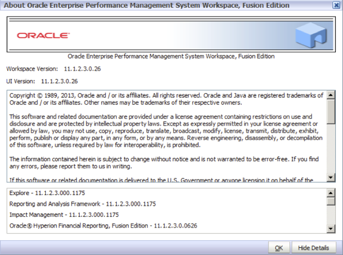
You must have a configured EPM Weblogic Domain. These instructions are based on the following environment:
- Server running EPM: win-citrix.krish.com
- Weblogic Managed server for EPM: EPMServer0
Setup Instructions
-
Logon to EPM Weblogic console using Admin credentials: http://win-citrix.krish.com:7001/console
-
Navigate to Security Realms > myrealm > Providers. Then, select Lock & edit in the left top corner of the weblogic console and create a new SAML2 IdentityAsserter. Name it SAML2_IdentityAsserter.
- Select Activate Changes and restart the managed server and Admin server.
- Login again to Weblogic Admin console and create Weblogic as a SP.
- Navigate to EPMServer0 > Federation Services > SAML 2.0 Service Provider. Configure the parameters as below.
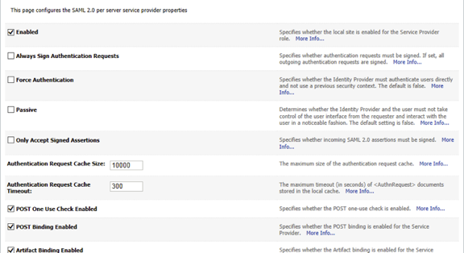
- Save the configuration and go to the SAML 2.0 General tab and select the configuration shown below. Do not enable Recipient Check.
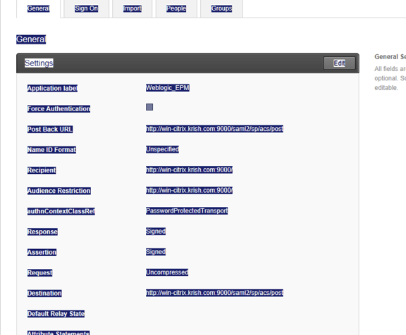
- Save the configuration.
- Add the following lines into the mod_wl_ohs.conf file located under the OHS config directory to forward requests to WLS from OHS. Restart the server after making the changes.
<LocationMatch ^/saml2/>
SetHandler weblogic-handler
WebLogicCluster HSS Server name:HSS port
</LocationMatch>
- Login back to the Admin console and navigate to the EPMServer0 > Federation Services > SAML 2.0 General tab. Select Publish Metadata and save the file in any desired location.
- Next, sign in to Okta and create a Template SAML 2.0 App. Use the configuration shown below.
Note: You can find the Post Back URL from the metadata that you published in Step 6. Be sure the Request is Uncompressed as shown above.
-
After you configure the SAML 2.0 template App in Okta, navigate to the Sign On tab for the template app, and select View Setup Instructions. Download the metadata and save it on the EPM server, in any desired location.
- Sign in to Weblogic Admin console and navigate to Security Realms > myrealm > Providers.
- Select SAML2_IdentityAssertor and go to Management tab. Create a new Web Single Sign-On Identity provider Partner as shown below.
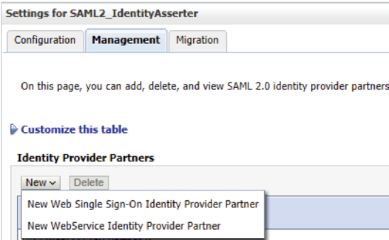
- Select the Okta IDP metadata and the select OK, as shown below.
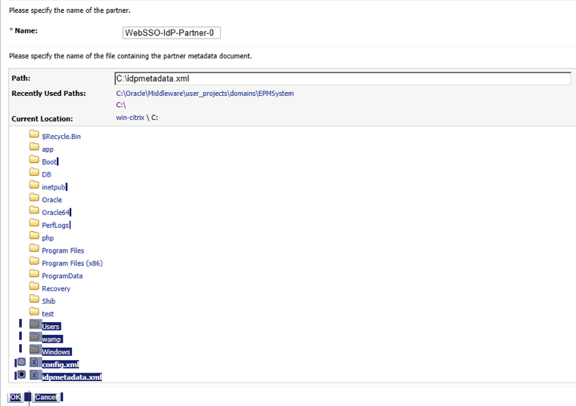
- Edit the identity partner. Enable and configure it as shown below.
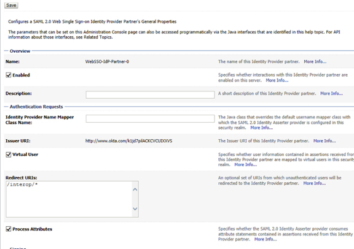
- Save the file and activate the changes. Restart the weblogic if necessary.
- If you have already integrated a LDAP directory to EPM, enable SSO by completing steps a–e, below.
- Sign in to the EPM console and open the Shared Service console. A screen similar to the following displays.
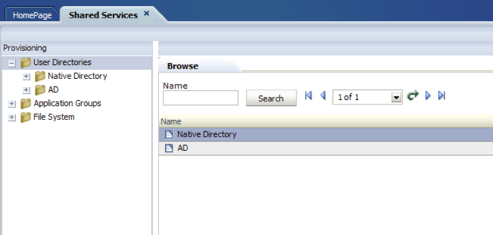
Note: In this example, active directory is configured in addition to the EPM directory store.
- Select Administration > Configure User Directories, as shown below.
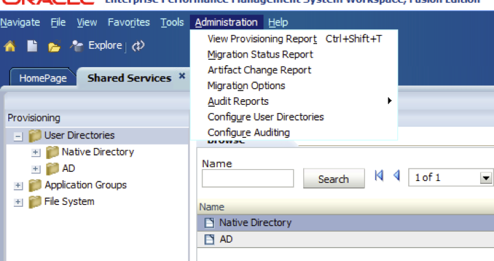
- The following screen opens. Select the Security Options tab, as shown below.
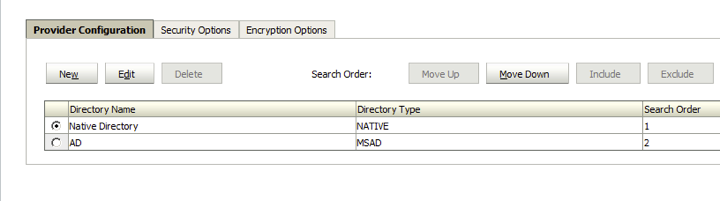
- On the Security Options tab, check Enable SSO, in the Single Sign-On Configuration section. Configure the other options as shown below.
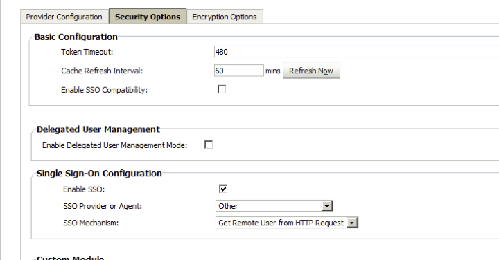
- Select OK.
- Sign in to the Weblogic Admin console. Make sure you have the users available in Weblogic realm. In this example, AD is integrated in the EPM as directory store; consequently, use the same directory store in Weblogic to pull the users to ensure the user set is the same in both Weblogic and Oracle EPM.
- Navigate to Security Realms > myrealm > Providers and create a new Active Directory authenticator. In this example, it is named AD. Use this or any name that meets your organization's naming conventions.
- Edit the new provider and select the Provider Specific tab. Configure according to your environment, using the configuration shown below as a guide.
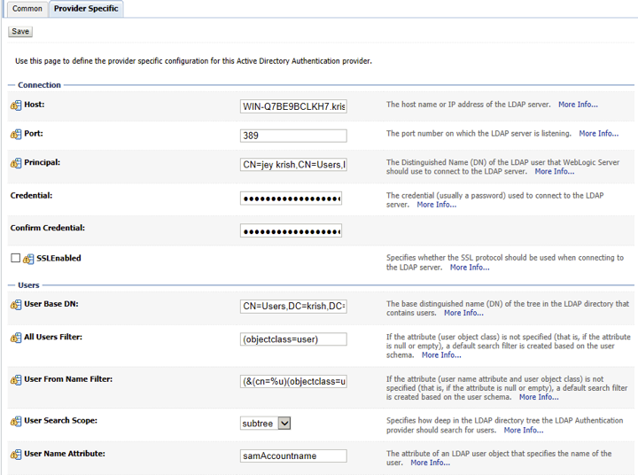
- Save the configuration.
- Edit the config.xml located under domain C:\Oracle\Middleware\user_projects\domains\EPMSystem\config. Change the Sharedservices app deployment from DD only to customRolesandPolicies, as shown below. <app-deployment>
<name>SHAREDSERVICES#11.1.2.0</name>
<target>EPMServer</target>
<module-type>ear</module-type>
<source-path>C:\Oracle\Middleware\EPMSystem11R1/products/Foundation/AppServer/InstallableApps/common/interop.ear</source-path>
<security-dd-model>CustomRolesAndPolicies</security-dd-model>
<staging-mode>nostage</staging-mode>
</app-deployment>
- To enable an SP-initiated session, go to the Weblogic Admin console and edit the EPMServer0. Navigate to the screen shown below and add the condition for the default policy. You can specify the group or users that are allowed access. In example shown below, a username is added.

-
Save the file and restart the server. This imports all the users and groups to Weblogic if you have integrated a LDAP store. You can also create a user inside Weblogic without integrating with LDAP server. Be sure you have the user both in Weblogic and EPM.
- Finally, sign in to Okta and assign users to the template app. Be sure to test as necessary.
-
Done!